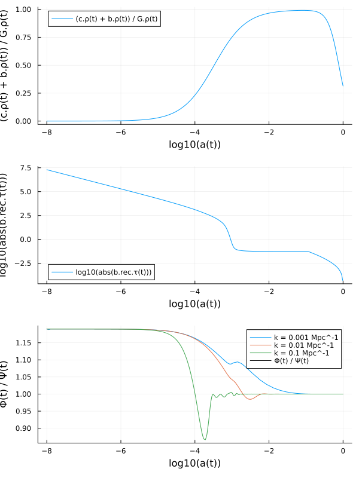

Solving models
Once a symbolic cosmological model M has been constructed, it can be turned into a numerical problem that can be solved for some given parameters:
SymBoltz.CosmologyProblem — TypeCosmologyProblem(
M::ODESystem, pars::Dict, shoot_pars = Dict(), shoot_conditions = [];
bg = true, pt = true, spline = true, debug = false, kwargs...
)Create a numerical cosmological problem from the model M with parameters pars. Optionally, the shooting method determines the parameters shoot_pars (mapped to initial guesses) such that the equations shoot_conditions are satisfied at the final time.
If bg and pt, the model is split into the background and perturbations stages. If spline is a Bool, it decides whether all background unknowns in the perturbations system are replaced by splines. If spline is a Vector, it rather decides which (unknown and observed) variables are splined.
ModelingToolkit.parameters — Methodparameters(prob::CosmologyProblem; bg = true, pt = true, spline = false)Get all parameter values of the cosmological problem prob.
SciMLBase.remake — Methodfunction remake(
prob::CosmologyProblem, pars::Dict;
bg = true, pt = true, shoot = true,
kwargs...
)Return an updated CosmologyProblem where parameters in prob are updated to values specified in pars. Parameters that are not specified in pars keep their values from prob.
CommonSolve.solve — Methodfunction solve(
prob::CosmologyProblem, ks::AbstractArray = [];
aterm = 1.0,
bgopts = (alg = Rodas4P(), reltol = 1e-8,),
ptopts = (alg = KenCarp4(), reltol = 1e-8,),
shootopts = (alg = NewtonRaphson(), reltol = 1e-3, pt = false),
thread = true, verbose = false, kwargs...
)Solve the cosmological problem prob up to the perturbative level with wavenumbers ks (or only to the background level if it is empty). The options bgopts and ptopts are passed to the background and perturbations ODE solve() calls, and shootopts to the shooting method nonlinear solve(). If threads, integration over independent perturbation modes are parallellized.
For example:
using SymBoltz, Unitful, UnitfulAstro
M = SymBoltz.ΛCDM()
pars = SymBoltz.parameters_Planck18(M)
prob = CosmologyProblem(M, pars, Dict(M.Λ.Ω₀ => 0.5), [M.g.ℰ ~ 1])
ks = 10 .^ range(-5, +1, length=100) / u"Mpc"
sol = solve(prob, ks)Cosmology solution for model ΛCDM
Stages:
Background: solved with Rodas4P, 1050 points
Perturbations: solved with KenCarp4, 52-276 points, x100 k ∈ [0.044506006235154404, 44506.0062351544] H₀/c (linear interpolation between log(k))
Parameters:
I₊ns = 0.965
h = 0.6736
h₊m = 1.0695971529767385e-37
Λ₊Ω₀ = 0.684664397645529 (shooting solution)
c₊Ω₀ = 0.26447041034523616
b₊Ω₀ = 0.04936780993111075
γ₊T₀ = 2.7255
I₊As = 2.099e-9
b₊rec₊Yp = 0.2454
ν₊Neff = 2.99Accessing the solution
The returned solution sol can be conveniently accessed to obtain any variable y of the model M:
sol(t, y)returns the background variable(s) $y(t)$ as a function of conformal time(s) $t$. It interpolates between time points using the ODE solver's custom-tailored interpolator.sol(k, t, y)returns the perturbation variable(s) $y(k,t)$ as a function of the wavenumber(s) $k$ and conformal time(s) $t$. It also interpolates linearly between the logarithms of the wavenumbers passed tosolve.
Note that y can be any symbolic variables in the model M, and even expressions thereof. Unknown variables are part of the state vector integrated by the ODE solver are returned directly from its solution. Observed variables or expressions are functions of the unknowns, and are automatically calculated from the equations that define them in the symbolic model. For example:
ts = sol[M.t] # get time points used in the background solution
ks = [1e-3, 1e-2, 1e-1, 1e0] / u"Mpc" # wavenumbers
as = sol(ts, M.g.a) # scale factors
Ωms = sol(ts, (M.b.ρ + M.c.ρ) / M.G.ρ) # matter-to-total density ratios
τs = sol(ts, M.b.rec.τ) # optical depths
Φs = sol(ks, ts, M.g.Φ) # metric potentials
Φs_over_Ψs = sol(ks, ts, M.g.Φ / M.g.Ψ) # ratio between metric potentialsPlotting the solution
SymBoltz.jl includes plot recipes for easily visualizing the solution. It works similarly to the solution accessing: call plot(sol, [wavenumber(s),] x_expr, y_expr) to plot y_expr as a function of x_expr. For example, to plot some of the same quantities that we obtained above:
using Plots
p1 = plot(sol, log10(M.g.a), (M.b.ρ + M.c.ρ) / M.G.ρ)
p2 = plot(sol, log10(M.g.a), log10(abs(M.b.rec.τ)))
p3 = plot(sol, ks[1:3], log10(M.g.a), M.g.Φ / M.g.Ψ) # exclude last k, where Φ and Ψ cross 0
plot(p1, p2, p3, layout=(3, 1), size=(600, 800))
Shooting method parametrization
It is common to parametrize some models not by initial conditions or constant parameters, but by values of variables at some (non-initial) time, like today. This is exactly like the boundary conditions of a boundary value problem. SymBoltz.jl supports such parametrizations with the shooting method:
SymBoltz.shoot — Functionfunction shoot(
prob::CosmologyProblem, pars::Dict, conditions::AbstractArray;
alg = TrustRegion(), bg = true, pt = false, verbose = false, kwargs...
)Solve prob repeatedly to determine the values in pars (with initial guesses) so that the conditions are satisfied at the final time.
Example usage is shown on the models page.
Choice of solver
In principle, models can be solved with any DifferentialEquations.jl ODE solver. But most cosmological models have very stiff Einstein-Boltzmann equations that can only be solved by implicit solvers, while explicit solvers usually fail. For the standard ΛCDM model, some good solvers are:
Rodas4P: Slow for large systems. Very accurate. Handles extreme stiffness. Default background solver.Rodas5P: Slow for large systems. Very accurate. Handles severe stiffness.KenCarp4(andKenCarp47): Fast. Handles medium stiffness. Default perturbation solver.Kvaerno5: Behaves similar toKenCarp4. Slightly more accurate. Slightly slower.TRBDF2: Very fast. Decent accuracy. Handles severe stiffness.
See also the solver benchmarks.